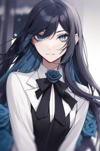
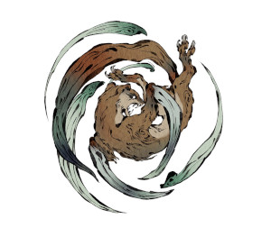
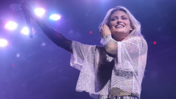

Ado

Gênero: Punk Rock
Biografia: Ado é um cantor japonês. Em 2020, aos 17 anos, ela estreou com o single digital intitulado "Usseewa", que alcançou a posição número 1 na Billboard Japan Hot 100, Oricon Digital Singles Chart e Oricon Streaming Chart.
Músicas Famosas:
- 【Ado】うっせぇわ (Usseewa)
- 【Ado】新時代 (ウタ from ONE PIECE FILM RED)
- 【Ado】踊
Kamaitachi

Gênero: Indie
Biografia: Kamaitachi teve o auge de sua carreira com o álbum homem torto, esse qual foi formado por músicas com letras peculiares, citando entidades como o próprio que deu nome ao álbum, contando histórias como com a música cabelos arco-íris e 6balas, essa segunda tendo recebido uma continuação em 2023, chamado 6balas (ato II)
Músicas Famosas:
- K a m a i t a c h i - Morgana (Prod.EAGLE)
- K a m a i t a c h i - A história de Jhonny (Prod.MarcusMaia)
- k a m a i t a c h i - Bob (prod.EAGLE)
Linkin Park

Gênero: Rock alternativo
Biografia: Linkin Park é uma banda de rock dos Estados Unidos formada em Agoura Hills, Califórnia.[9] A formação atual da banda inclui o vocalista e multi-instrumentista Mike Shinoda, o guitarrista Brad Delson, o baixista Dave Farrell, o DJ Joe Hahn, a vocalista Emily Armstrong e o baterista Colin Brittain. A formação do grupo em seus sete primeiros álbuns de estúdio incluía o vocalista Chester Bennington e o baterista Rob Bourdon; após o suicídio de Bennington em julho de 2017, a banda entrou em um hiato por tempo indeterminado. Em setembro de 2024, Linkin Park retornou as atividades com as adições de Armstrong e Brittain.[10] O vocalista Mark Wakefield e o baixista Kyle Christner são ex-membros da banda.
Músicas Famosas:
- Numb (Official Music Video) [4K UPGRADE] – Linkin Park
- The Emptiness Machine (Official Music Video) - Linkin Park
- Heavy Is the Crown (Official Audio) - Linkin Park